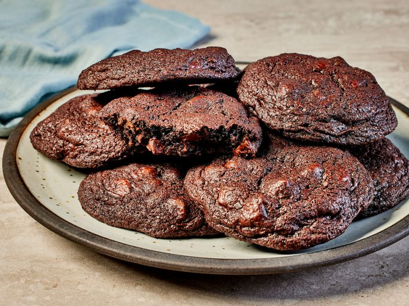

Back to home page
Chocolate Chocolate Chip Cookies

Sweet double chocolate flavour cookies.
Ingredients:
- 1 ½ cups white sugar
- 1 cup butter, softened
- 2 large eggs
- 2 teaspoons vanilla extract
- 2 cups all-purpose flour
- ⅔ cup cocoa powder
- ¼ teaspoon salt
- 2 cups semisweet chocolate chips
- ½ cup chopped walnuts (Optional)
Directions:
- Gather all ingredients and preheat the oven to 350 degrees F (175 degrees C).
- Beat sugar, butter, eggs, and vanilla in a large bowl until light and fluffy.
- Combine flour, cocoa powder, baking soda, and salt in another bowl; stir into
butter mixture until well blended.
- Mix in chocolate chips and walnuts. Drop spoonfuls of dough 2 inches apart
onto ungreased cookie sheets.
- Bake in the preheated oven just until set, 8 to 10 minutes. Cool slightly on
the cookie sheets before transferring to wire racks to cool completely.
- Enjoy!